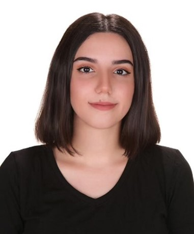

Bengisu Özyiğit

bengisuozyigit07@gmail.com
Istanbul, Turkey
+90 (538) 511 14 76
linkedin.com/in/bengisuozyigit
I am a 23 years old computer engineer who is hardworking, friendly and honest and loves to explore and learn new things.
Education
- Günhan High School (2014-2019)
- MEF University (2019- 2023)
Work Experience
- Intern in the Card Systems Department, Ziraat Technology (06/2022 – 07/2022)
- Developed an application that scans, encrypts, and decrypts QR codes with C#.
- Intern in the Application Development Department, Turkcell Global Bilgi (09/2021 – 09/2021)
- Learned C#, HTML, CSS, and PL/SQL programming languages
- Developed three different projects with these programming languages
- Intern in Data Analysis Department, Cordes & Graefe (07/2022 – 09/2022)
- Developed a website where people at work can follow projects, portfolios, and programs, participate and see other works of the company.
- Learned data analytics and artificial intelligence
Skills
- Proficiencies
- C, C#, Java, MIPS Assembly Language, Python, Verilog, HTML, CSS
- Languages
- English (Advanced), German (Intermediate), Spanish (Beginner), Korean (Beginner)
Projects
- Character Recognition in Images
- ARG with Unity and Vuforia Engine
- Football Club Creation and Transfer Program with C and POSIX Thread Library
- Food Ordering Web Application
- Game using DE1-SoC board and ARM
- Encryption on FPGA
- 8-bit CPU Design and Implementation in Logisim
- Multi-core Computer Architecture Design and Implementation in Logisim
- Person Recognition and Tracking on video and camera
- QR code Encryption and Decryption Application
Certificates
- Busuu
- A1 Level in German
- A2 Level in German
- A1 Level in Spanish
- Wesleyan University
- Introduction to Abnormal Psychology
- IBM
- Cyber Threat Intelligence
- Cybersecurity Compliance Framework & System Administration
- Cybersecurity Roles, Processes & Operating System Security
- Introduction to Cybersecurity Tools & Cyber Attacks
- Network Security & Database Vulnerabilities
- Penetration Testing, Incident Response and Forensics
- Workshops
- Introduction to Automation with Python
- Python Programming
Activities
- Workshops
- Google Developer Student Club,
Core Team Member and Accountant and Lead of Social Media Team (09/2021 – 09/2022)
- Preparing workshops and interviewing well-known people in the field of technology, and controlling and sharing posts on the club's social media accounts.
- MEF Dance, Dancer in Hip Hop Dance Team (09/2019 – 09/2022)
- High School Volleyball Team, Hitter (09/2014 – 06/2019)
- Social Solidarity Club, Volunteer (09/2014 – 06/2019)
- Helped orphans and children with Down syndrome, animals in shelters, and people who were not financially off.
Hobbies
- Basketball, dancing, designing, learning something new, playing piano, reading book, skiing, singing, solving problems, traveling, volleyball
References
- Elif Beşel, Software Testing Analyst, Ziraat Technology
beselelif@gmail.com, +90 (553) 607 58 29
- Emine Kaya, Card Systems Manager, Ziraat Technology
emidemirkaya2@gmail.com, +90 (555) 510 96 22
- Seren Abdik, Finance and Operations Solutions Unit Manager, Turkcell Global Bilgi
seren.abdik@globalbilgi.com.tr, +90 (532) 555 12 41
- Şeniz Demir, Assistant Professor, MEF University
demirse@mef.edu.tr
- Şuayb Ş. Arslan, Associate Professor, Massachusetts Institute of Technology (MIT)
arslans@mef.edu.tr, +90 (212) 395 37 35
- Tuna Çakar, Doctor Faculty Member, MEF University
cakart@mef.edu.tr, +90 (530) 922 55 05